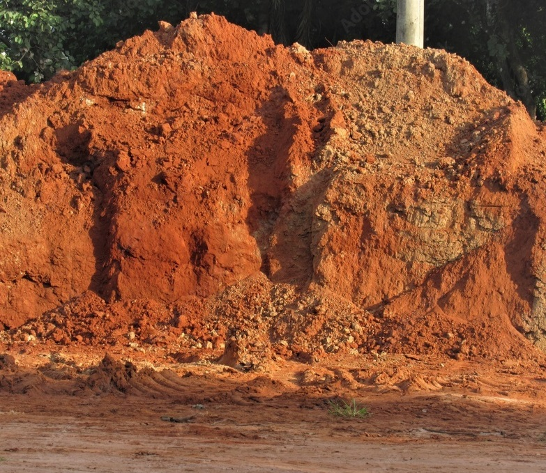
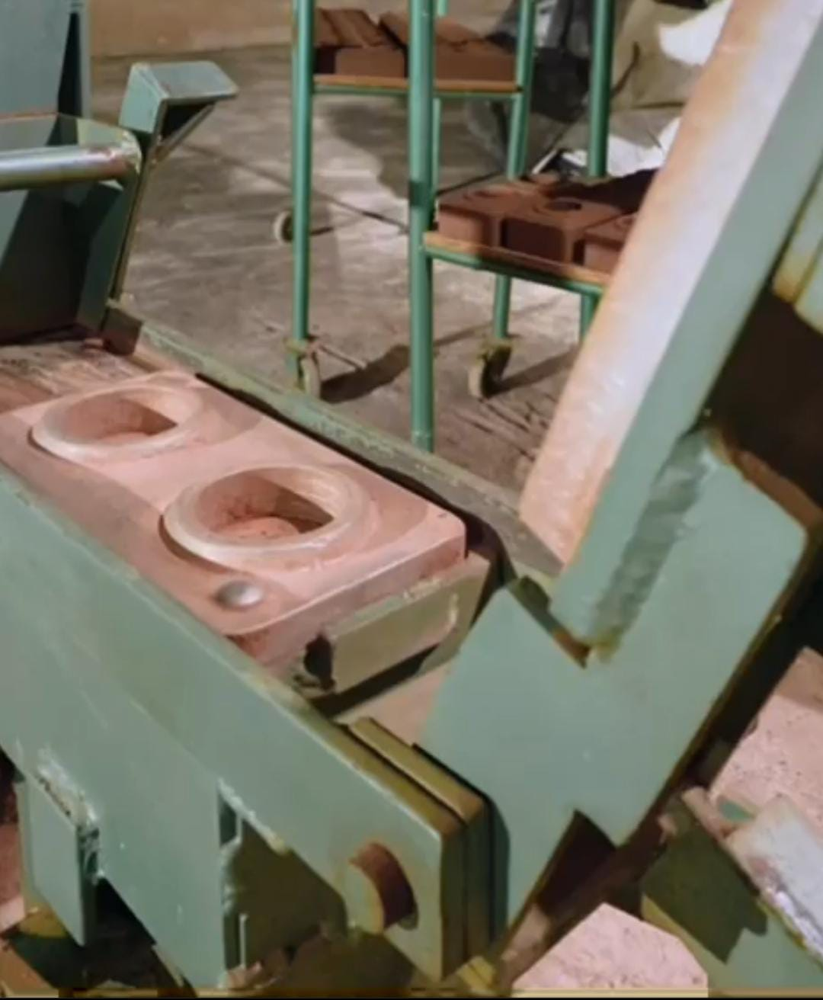
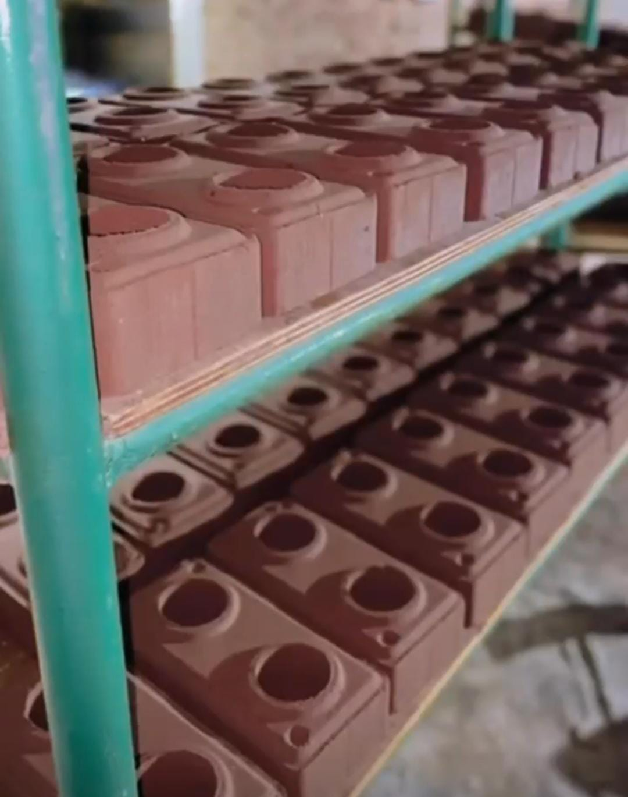
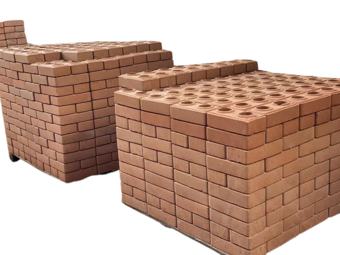

Já pensou em economizar na construção civil?
Quando o assunto é construção, a velocidade é um fator muito importante.
Quanto mais rápido a construção for concluída, menos mão de obra será necessária e, portanto, menos dinheiro será gasto.
É aí que entram os blocos ecológicos, com o formato que se assemelha a peças de "Lego".
Facilitando o processo de construção e diminuindo o tempo necessário para levantar as paredes.
Processo de fabricação

1ª Preparo da matéria-prima
Utilização de solo (terra) e cimento como matéria-prima principal. Seleção e preparação do solo, garantindo a proporção adequada de argila e areia. Opcionalmente, adição de estabilizantes, como cal, para melhorar a resistência.

2ª Prensagem
Mistura da matéria-prima com água e cimento para criar uma mistura homogênea. Preenchimento de moldes e aplicação de pressão para formar os blocos. A prensagem cria blocos compactos e resistentes.

3ª Cura
Os blocos são retirados dos moldes e submetidos a um processo de secagem controlada. A cura envolve manter os blocos em um ambiente úmido e protegido da luz solar por um período específico. Durante a cura, ocorre a reação química do cimento, aumentando a resistência dos blocos.

O Bloco Ecológico é o FUTURO da Construção Civil e esse futuro começa HOJE!
- Produto sutentável e construção moderna
- Isolamento térmico e acústico
- Menor tempo de duração da obra
- Beleza e durabilidade garantida
- Obra econômica custo x benefício comprovado